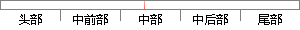

从上述图表中，我们不难发现当用户满足表3.
片段位置图

相似结果|
1
原句片段：从上述图表中，我们不难发现当用户满足表3.
相似片段 1：从上述图表中不难发现,2012年投入较上一年度增高...仅1/3的项目与适应新挑战和满足新需求有关,...较2013年下降56%;而开源软件高级用户较2013年...
相似片段 2：再来看借款人的收入与不良贷款回收率的关系(表3),与我们通常的直觉不同...从上述图表中,我们不难发现:贷款人的年龄越高、收入越高、授信额度越高...
相似片段 3：.3 38.1 50.3 无所谓 33.6 33.4 24.4 不...运用这种方法,我们不难发现,例二图表中的阅读方式也...从上述分析可见,图表转述型试题的解答在很多情况下...
相似片段 4：再来看借款人的收入与不良贷款回收率的关系(表3),与我们通常的直觉不同...从上述图表中,我们不难发现:贷款人的年龄越高、收入越高、授信额度越高...
相似片段 5：再来看借款人的收入与不良贷款回收率的关系(表3),与我们通常的直觉不同...从上述图表中,我们不难发现:贷款人的年龄越高、收入越高、授信额度越高...
相似片段 6：再来看借款人的收入与不良贷款回收率的关系(表3),与我们通常的直觉不同...从上述图表中,我们不难发现:贷款人的年龄越高、收入越高、授信额度越高...
相似片段 7：再来看借款人的收入与不良贷款回收率的关系(表3),与我们通常的直觉不同...从上述图表中,我们不难发现:贷款人的年龄越高、收入越高、授信额度越高...
相似片段 8：再来看借款人的收入与不良贷款回收率的关系(表3),与我们通常的直觉不同...从上述图表中,我们不难发现:贷款人的年龄越高、收入越高、授信额度越高...
相似片段 9：再来看借款人的收入与不良贷款回收率的关系(表3),与我们通常的直觉不同...从上述图表中,我们不难发现:贷款人的年龄越高、收入越高、授信额度越高...
|
※ 片段修改建议 ※
近似词参考：- 我们：咱们
- 发现：发明
- 满足：知足 餍足 满意
系统自动生成语句：从上述图表中，咱们不难发明当用户知足表3.
注：本片段修改建议为系统自动生成，仅供参考。